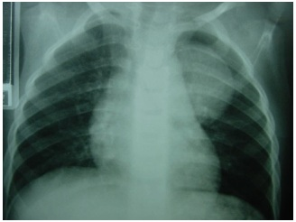
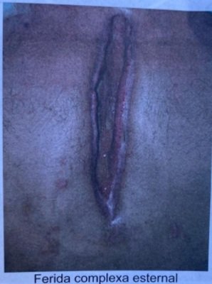
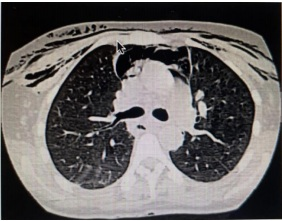

Questão 1 · Estenoses Traqueais · 4000190722Paciente vítima de trauma encefálico grave há 1 mês, permaneceu em ventilação mecânica em terapia intensiva com tubo orotraqueal por 19 dias, pois seu nível neurológico oscilava durante a internação. Após extubação, recebeu alta sem intercorrências. Hoje, 1 mês após a alta é admitido em sala de emergência queixando-se de dispneia progressiva, rouquidão e apresenta ao exame físico estridor laríngeo. Qual a hipótese diagnóstica mais provável?
A Fístula traqueo-traqueal.
B Broncoespasmo.
C Pneumotórax.
D Estenose laringotraqueal.
Questão 2 · Fístulas Traqueais · 4000189049Paciente do sexo masculino apresenta fístula traqueoesofágica pós-intubação orotraqueal. Em relação a este quadro, é incorreto afirmar:
A O tratamento cirúrgico está indicado para todos os casos.
B As manifestações clínicas são mais evidentes com a ingestão de dieta líquida.
C A pressão do balonete endotraqueal sobre a sonda nasogástrica favorece esta complicação.
D Na correção cirúrgica, a ressecção traqueal é obrigatória.
Questão 3 · Anatomia do Mediastino · Introdução · Aneurisma de Aorta Torácica · 4000188972Na anatomia do arco aórtico, qual a sequência mais comum dos vasos da base (da porção proximal para distal)?
A Carótida comum direita, tronco branquiocefálico e subclávia esquerda.
B Tronco branquiocefálico, carótida comum esquerda e subclávia esquerda.
C Subclávia direita, carótida comum e subclávia esquerda.
D Tronco branquiocefálico, carótida comum direita e carótida comum esquerda.
Questão 4 · Tumores do Mediastino · 4000187529São os tipos mais comuns do mediastino posterior:
A Tumores neurogênicos.
B Linfomas.
C Cisto broncogênicos.
D Tumores de células germinativas.
Questão 5 · Tumores do Mediastino · 4000187528Os tumores de mediastino são neoplasias raras e aproximadamente 30% dos pacientes adultos apresentam sintomas, sendo alguns deles mais comuns de acordo com o tipo de tumor. 1. Linfoma. A. Dispneia, chiado e hemoptise. 2. Timoma com miastenia gravis. B. Sudorese noturna, perda de peso, fadiga, adenopatia extratorácica, elevação da PCR e leucocitose. 3. Granuloma mediastinal. C. Massa testicular, elevação do germinativas. D. Fraqueza utuante no decorrer do dia, fadiga precoce, ptose e diplopia. Assinale a alternativa com a correta associação entre o tipo de tumor e sintomas associados.
A 1-B, 2-D, 3-C, 4-A
B 1-B, 2-D, 3-A, 4-C
C 1-C, 2-A, 3-B, 4-D
D 1-A, 2-B, 3-D, 4-C
Questão 6 · Tumores do Mediastino · 4000187527A localização mais comum dos tumores neurogênicos do tórax é:
A Mediastino anterior.
B Mediastino médio.
C Mediastino lateral.
D Mediastino posterior.
Questão 7 · Tumores do Mediastino · 4000187518Homem de 42 anos vítima de politraumatismo foi submetido à tomogra a de tórax que identi cou fratura de costela à esquerda e observou-se também a presença de lesão sólida de 3 x 4 x 6 cm em goteira paravertebral à esquerda. De acordo com a epidemiologia das lesões de mediastino, assinale a principal hipótese diagnóstica.
A Teratoma.
B Tumor de célula germinativa.
C Tumor neurogênico.
D Linfoma.
Questão 8 · Tumores do Mediastino · 4000186754O mediastino é dividido em mediastino anterior, médio e posterior. Ao mediastino anterior, estão associadas as seguintes patologias:
A Linfoma, aneurisma de aorta descendente e cisto pleuropericárdico.
B Meningomielocele, cisto broncogênico e tumor de esôfago.
C Timoma, linfoma e tumor de tireóide.
D Bócio mergulhante, linfoma e tumor de esôfago.
E Meningocele, timoma e aneurisma de aorta ascendente.
Questão 9 · Cirurgia Torácica · Cirurgia · 4000184365As imagens abaixo representam um dreno radiopaco utilizado em drenagem torácica. NA REALIZAÇÃO DE UMA DRENAGEM TORÁCICA SOB SELO D’ÁGUA EM UM PACIENTE, O POSICIONAMENTO CORRETO DO ÚLTIMO ORIFÍCIO DA EXTREMIDADE “B” É:

A No espaço intercostal, distante do feixe vásculo-nervoso.
B Entre as pleuras visceral e parietal.
C No subcutâneo, sem exteriorização para o ambiente.
D Entre a pleura visceral e o parênquima pulmonar.
Questão 10 · Cistos do Mediastino · 4000184153Lactente de 2 anos de idade, oligossintomático, é trazido à consulta ambulatorial por apresentar a seguinte imagem radiográfica: Qual é a principal hipótese diagnóstica?

A Malformação adenomatoide cística.
B Cisto pulmonar congênito.
C Cisto broncogênico.
D Teratoma.
Questão 11 · Estenoses Traqueais · Cirurgia · 4000183109Mulher, 55 anos de idade, é atendida na sala de emergência com quadro de dispneia e cornagem. Após instalação de cateter de oxigênio a 5 litros por minuto a paciente apresenta melhora, porém permanece com o quadro de respiração ruidosa. Durante investigação verifica-se que a paciente esteve internada em UTI há um mês, necessitou de ventilação mecânica e foi submetida a intubação orotraqueal. Qual é a melhor conduta?
A Intubação orotraqueal.
B Broncoscopia.
C Traqueostomia.
D Cricotiroideostomia.
Questão 12 · Pneumotórax espontâneo · Cirurgia Torácica · Cirurgia · 4000183105Homem, 28 anos de idade, previamente hígido, foi submetido a drenagem pleural no 5º espaço intercostal por pneumotórax espontâneo. No momento imediato após a drenagem pleural já apresentava escape aéreo pelo dreno. No 8º dia de internação hospitalar ainda mantinha fístula aérea. Em relação aos dados apresentados na história clínica, Como isso se mostra no frasco de drenagem e qual é a melhor conduta?
A Oscilação ampla da coluna de líquido do sêlo d’a
B Borbulhamento do líquido no frasco do dreno; cirurgia.
C Borbulhamento do líquido no frasco de drenagem; realizar a pleurose.com talco.
D Oscilação intermitente da coluna de líquido; cirurgia.
Questão 13 · Cirurgia Torácica · Cirurgia · 4000183104Mulher, 76 anos de idade, apresenta na radiogra a de tórax um alargamento do mediastino antero superior com desvio da traqueia para lado direito. Exame físico: BEG e eupneica. Ausculta pulmonar: observa-se MV + bilateralmente sem RA. Ausculta cardíaca: bulhas rítmicas, normofonéticas e sem sopros. Frequência cardíaca: 72 bpm. O abdome encontra-se globoso à inspeção, flácido, indolor e sem visceromegalias à palpação. Qual é a hipótese diagnóstica?
A Teratoma.
B Linfoma de mediastino.
C Timoma.
D Bócio intratorácico.
Questão 14 · Fatores de risco · Tratamento · Etiologia · 4000181200É conhecido, na prática clínica diária em cirurgia torácica, que várias situações de patologias pulmonares evoluem de forma insidiosa, levando a importante destruição da arquitetura do parênquima pulmonar, como, por exemplo, a tuberculose pulmonar, o abcesso pulmonar, os traumatismos penetrantes de alto impacto, produzindo sequelas pulmonares conhecidas como broatelectasias e cavernas pulmonares. Comumente essas sequelas têm indicação de serem tratadas com ressecção pulmonar do local destruído. Quanto às condições clínicas que levam, classicamente, a essa indicação cirúrgica, assinale a alternativa correta.
A Presença de hemoptise, tosse crônica, rouquidão persistente.
B Presença de hemoptise, presença de caverna pulmonar com bola fúngica, infecções (pneumonias) de repetição.
C Presença de escarro purulento permanente, presença de cavernas pulmonares, presença de insuficiência respiratória secundária a sequela pulmonar.
D Presença de dor torácica, tosse crônica, halitose.
E Risco de transformação maligna da sequela pulmonar. Desejo do paciente de evitar risco de câncer (oncofobia).
Questão 15 · Toracotomia · Indicações de Toracotomia de Emergência · 4000189711Analise o trecho a seguir: “A toracotomia na sala de emergência é um procedimento recomendado apenas para situações especí cas, como a presença de choque refratário às medidas agressivas iniciais assim como esvaecimento dos sinais vitais quando da suspeita de lesões cardíacas. Fatores logísticos, como ausência de pro ssionais especializados e não disponibilidade de equipamentos ou dependências adequadas podem ser consideradas na decisão por realizar o procedimento.” Disponível medicoresidente/article/download/416/406. Acesso em: 02 de janeiro de 2022. É CORRETO afirmar que a técnica mencionada envolve:
A Uma incisão torácica anterolateral estendida, na altura do 3° ou 4° espaço intercostal, no mesmo lado do ferimento. Com o pulmão afastado, o pericárdio é aberto paralelo e, anteriormente, ao nervo frênico.
B Uma incisão torácica posterolateral estendida, na altura do 3° ou 4° espaço intercostal, no mesmo lado do ferimento. Com o pulmão afastado, o pericárdio é aberto paralelo e, posteriormente, ao nervo frênico.
C Uma incisão torácica anterolateral estendida, na altura do 4° ou 5° espaço intercostal, no mesmo lado do ferimento. Com o pulmão afastado, o pericárdio é aberto paralelo e, anteriormente, ao nervo frênico.
D Uma incisão torácica posterolateral estendida, na altura do 4° ou 5° espaço intercostal, no mesmo lado do ferimento. Com o pulmão afastado, o pericárdio é aberto paralelo e, posteriormente, ao nervo frênico.
Revisar: possível letra faltando em enunciado
Questão 16 · Incisões da Parede Torácica · 4000175622Sobre drenagem cirúrgica, é INCORRETO afirmar:
A Pode ter três finalidades: diagnóstica, preventiva e curativa.
B A drenagem preventiva está indicada em cirurgias onde haja suspeita de infecção.
C Pode remover coleções líquidas ou gasosas.
D É uma técnica invasiva e cruenta.
E A drenagem é exceção nas cirurgias torácicas.
Questão 17 · Cirurgia Torácica · Cirurgia · 4000169056Um paciente de 29 anos está no 4º dia de drenagem de tórax por hemotórax traumático associado a fratura de dois arcos costais. Não tem outras afecções. Após avaliação, o cirurgião decide retirar o dreno. Qual deve ser a recomendação?
A Manter o curativo oclusivo, após a retirada do dreno, sem trocar por, pelo menos, 5 dias.
B Infiltrar previamente o espaço intercostal com anestésico local.
C Retirar no final da expiração ou da inspiração, desde que mantida a manobra de Valsalva.
D Retirar somente ao final da inspiração.
E Retirar somente ao final da expiração.
Questão 18 · Síndrome de Boerhaave · Pericardite constritiva · Semiologia cardiaca · 4000168565Um paciente no 8+ dia de infecção pelo SARS-COV-2 encontra-se em uso de cateter nasal de alto uxo (CNAF) a 40 litros e saturação de 02 a 97%. Algumas horas depois, o paciente se queixa de intensa dor torácica, apresentando saturação de 65%, apesar do uso de CNAF, além de intenso esforço respiratório, turgência jugular e hipotensão. Em meio ao caos do quadro, a R1 de plantão percebe durante a ausculta cardíaca que o paciente apresentava crepitações em precórdio, sincrônicas aos batimentos cardíacos. A complicação apresentada e o sinal semiológico, respectivamente, são:
A Embolia pulmonar maciça e sinal de Boerhaave;
B Ruptura de cordoalha e sinal de Kussmaul;
C Embolia gordurosa e sinal de Hollenhorst;
D Embolia gasosa e sinal de Palla;
E Pneumomediastino e sinal de Hamman.
Questão 19 · Cirurgia Torácica · Cirurgia · 4000168330Paciente de 60 anos, intubado há 7 dias por pneumonia por covid-19, apresentou piora dos parâmetros ventilatórios devido pneumotórax à esquerda. Após passagem de dreno pleural, houve reexpansão completa do pulmão, porém com escape aéreo persistente, levando à perda de cerca de 15% do volume corrente através do dreno. Em relação ao dreno de tórax, que conduta, dentre as abaixo, deve ser adotada?
A Manter o dreno e observar o escape aéreo.
B Inserir um segundo dreno.
C Realizar pleurodese pelo dreno com agente esclerosante.
D Indicar pleuroscopia para sutura ou ressecção da fístula.
Questão 21 · Estenoses Traqueais · Cirurgia Torácica · Traqueia · 4000167106Assinale a alternativa que NÃO apresenta uma complicação traqueal geralmente relacionada à intubação orotraqueal prolongada.
A Estenose traqueal.
B Fístula traqueoesofágica.
C Fístula traqueoinominada.
D Granuloma de traqueia.
E Lesão do nervo facial.
Questão 22 · Complicações · Cirurgia · 4000164237Homem de 64 anos foi submetido a revascularização do miocárdio, cujo acesso cirúrgico foi por meio de esternotomia mediana. Após 25 dias de cirurgia, iniciou drenagem purulenta e deiscência da ferida operatória. O tratamento inicial foi feito com desbridamento dos tecidos desvitalizados e terapia por pressão negativa. Após três ciclos de terapia, a ferida cirúrgica encontra-se como mostrado na figura. Qual o melhor tratamento subsequente?

A Cicatrização por segunda intenção.
B Enxerto de pele total.
C Rotação de retalho miocutâneo.
D Fechamento primário da pele.
Questão 23 · Estenoses Traqueais · 4000163762Um homem de 28 anos com antecedente de intubação traqueal prolongada após politraumatismo. Procura o Pronto Socorro com dispneia. Exame físico: consciente, orientado, apresentando cornagem e SatO₂ = 90% em ar ambiente. O diagnóstico clínico na sala de emergência é de estenose de traqueia pós-intubação. Nesse caso, é CORRETO afirmar que a sequência do atendimento inicial, deve ser de:
A Intubação, ventilação mecânica e broncofibroscopia.
B Cricotireoidostomia, ventilação mecânica e tomografia computadorizada.
C Traqueostomia, ventilação espontânea e corticoide.
D Oxigênio, corticoide e broncoscopia rígida.
Questão 24 · Mediastino · 4000170189Sobre o pneumomediastino, é correto afirmar:
A na maioria dos casos espontâneos, o tratamento é cirúrgico.
B a drenagem do tórax e a pleurodese são geralmente necessárias como forma de tratamento.
C o pneumomediastino espontâneo é uma condição benigna que apresenta dor torácica e dispneia cujo tratamento é expectante na maioria dos casos.
D a síndrome de Booerhave raramente evolui com mediastinite.
E no pneumomediastino espontâneo, não se observa a ruptura alveolar.
Questão 25 · Timo · Quadro Clínico · 4000144054Paciente do sexo feminino, 40 anos, com relato ambulatorial com disfonia progressiva com di culdade de fala por tempo prolongado, associada a ptose palpebral e diplopia. Após avaliação com neurologista identi cado padrão decremental no traçado eletromiográ co e anticorpos contra os receptores nicotínicos da placa motora. Durante investigação diagnóstica identi cada em tomogra a de tórax contrastada massa bem definida, de contornos lobulados sem sinais de invasão das estruturas adjacentes no mediastino pré-vascular. Diante do diagnóstico neurológico, qual o provável diagnóstico do tumor mediastinal identificado:
A Teratoma.
B Paraganglioma.
C Timoma.
D Cisto pericárdico.
E Carcinoma tímico.
Revisar: possível letra faltando em enunciado
Questão 26 · Mediastino · 4000143764Homem de 28 anos, vítima de acidente automobilístico há 1 hora. Refere apenas muita dor torácica durante a respiração. Encontra-se estável hemodinamicamente. EF do tórax: en sema de tecido celular subcutâneo principalmente em região anterior e lateral esquerda do tórax, expansibilidade simétrica bilateralmente, murmúrio vesicular presente bilateralmente, sem alteração à percussão. TC de tórax apresentada a seguir. Os diagnósticos e a conduta mais adequada são

A pneumomediastino e enfisema de tecido celular subcutâneo; observação clínica e medidas de suporte (analgesia e oxigenioterapia).
B pneumomediastino, pneumotórax bilateral e enfisema de tecido celular subcutâneo; drenagem do mediastino e torácica bilateral.
C pneumotórax bilateral e enfisema de tecido celular subcutâneo; drenagem torácica bilateral.
D pneumotórax bilateral e enfisema de tecido celular subcutâneo; observação clínica e medidas de suporte (analgesia e oxigenioterapia).
Questão 27 · Timo · Quadro Clínico · Tomograf ia Computadorizada de Tórax · 4000142651Mulher, 39 anos, com história de fraqueza muscular, dispneia, di culdade de deglutição e discreta ptose palpebral ao nal do dia. TC de tórax: tumor em mediastino anterossuperior. A principal hipótese diagnostica é:
A teratoma
B linfoma
C timoma
D bócio tireoideano
Questão 28 · Parede Torácica · Cirurgia Torácica · Tumores da Parede Torácica · 4000133706Homem comparece à consulta com dor em arcos costais. A tomogra a de tórax mostra lesões líticas e blásticas. A tomogra a computadorizada de corpo inteiro não revela outras anormalidades. É feita biópsia de arco-costal com exame histopatológico da peça e análise imunoistoquímica. Pensando em um tumor de sítio primário desconhecido, os marcadores mais específicos do painel imunoistoquímico são:
A beta-HCG e tireoglobulina .
B PSA e tireoglobulina.
C beta-HCG e CEA .
D CEA e PSA .
Questão 29 · Cirurgia Torácica · Cirurgia · 4000131371Os tumores mais comuns na parede torácica são:
A neurogênicos.
B lipomas.
C hemangiomas.
D linfangiomas.
Questão 30 · Hiperidrose e Simpatectomia · Cirurgia · 4000131254Na hiperidrose palmar primária:
A o diagnóstico pode ser confirmado pela presença do TSH elevado (hipotireoidismo subclínico) que acompanha o quadro clínico.
B a síndrome de Horner é a complicação mais frequente após a simpatectomia por videotoracoscopia.
C a cirurgia somente deve ser indicada após avaliação multidisciplinar, com a comprovação do profissional de psicologia de que há efetivo dano emocional associado ao quadro clínico.
D a simpatectomia videotoracoscópica, realizada em nível da terceira e quarta vértebras torácicas (T3-T4), é o tratamento definitivo de escolha.
Questão 31 · Anatomia do Mediastino · Cirurgia · 4000120269Com relação à anatomia intratorácica normal, é correto afirmar que
A a veia cava superior é formada pela veia braquiocefálica esquerda e pela veiainominada.
B a artéria torácica interna direita se origina da artéria subclávia direita.
C as artérias subclávia e carótida comum esquerdas e a carótida comum direita sãoramos da aorta.
D a veia hemiázigo drena para a veia cava superior.
Questão 32 · Cirurgia Torácica · Cirurgia · 4000114272A causa mais comum de um empiema no pós-operatório de uma cirurgia torácica é
A Pneumonia.
B Sepse sistêmica.
C Perfuração esofágica.
D Hemotórax retido.
Questão 33 · Estenoses Traqueais · Cirurgia · 4000111242Homem, 19 anos de idade, com antecedente de queda da motocicleta há 70 dias com múltiplas fraturas de costelas à direita, contusão pulmonar, hemopneumotórax e trauma craniano grave. Tratado, na ocasião, com drenagem torácica à direita e ventilação mecânica por 17 dias. Recebeu alta hospitalar após 28 dias de internação em bom estado geral. Retorna ao serviço de emergência com queixa de dispneia de instalação progressiva associada a cornagem. Ao exame clínico, saturação de 94% frequência respiratória de 24 ipm, tiragem de fúrcula. Qual é a hipótese diagnóstica mais provável e o tratamento imediato?
A Estenose de traqueia; intubação orotraqueal e ventilação invasiva.
B Estenose de traqueia; corticoesteroide endovenoso, inalação com adrenalina e ventilação não-invasiva.
C Estenose de laringe; cricotireoidostomia e ventilação invasiva.
D Estenose de laringe; corticoesteroide e broncodilatadores inalatórios e ventilação não- invasiva.
Questão 34 · Tumores do Mediastino · Cirurgia · 4000084613Em relação aos tumores de mediastino, é correto afirmar que o:
A tratamento mais indicado para o teratoma é a quimioterapia
B tratamento mais indicado para o timoma é a radioterapia
C timoma é o mais comum no mediastino anterossuperior
D teratoma é o mais comum no mediastino posterior
Questão 35 · Complicações · 4000053542Mulher de 62 anos de idade, submetida a revascularização miocárdica, com pontes da artéria mamária interna e enxertos da veia safena, há 30 dias, apresenta incisão da esternotomia mediana aberta e infectada. Assinale a assertiva correta.
A A infecção da ferida esternal e mediastinite após esternotomia mediana raramenteexigem reoperação para desbridamento e reconstrução pois cicatrizam por segunda intenção.
B Os fatores de risco mais frequentes para infecção da ferida esternal e mediastinite apósesternotomia mediana incluem cirurgia cardíaca com duração prolongada e emprego de enxertos das veias safenas.
C O retalho do músculo peitoral menor é o preferido para a reconstrução destas feridasesternais após a esternotomia mediana.
D O retalho do músculo grande dorsal, Tipo V, baseado na artéria toracodorsal, é opreferido para a reconstrução da referida paciente pois a artéria mamária interna está comprometida.
E O retalho do músculo peitoral maior, baseado na artéria toracoacromial, é o preferidopara a reconstrução destas feridas esternais após a esternotomia mediana.
Questão 36 · Cirurgia Torácica · Cirurgia · 4000042115Paciente evidenciando derrame pleural importante, associado a possível quadro infeccioso. Foi indicado drenagem torácica. Qual a opção mais adequada de dreno para realização do procedimento de drenagem torácica em circuito fechado?
A Dreno de Penrose e curativo com gaze.
B Dreno de Blake e curativo com gaze.
C Dreno tubular rígido com sistema em selo d'água.
D Dreno de Broadcast-Lime com sistema em selo d'água.
Questão 37 · Esternotomia · Complicações · 4000011364Homem, 59 anos de idade, encontra-se internado no 5º PO de cirurgia de troca valvar mitral por prótese biológica. Exame físico: bom estado geral, afebril, eupneico; ferida operatória esternal com pele íntegra, sem hiperemia ou secreção, com presença de instabilidade esternal em manúbrio. Qual é a conduta mais adequada?
A Colocação de faixa torácica
B Coleta de hemocultura e antibioticoterapia
C Cintilografia óssea
D Ressutura de esterno
E Observação clínica
Questão 38 · Anatomia do Mediastino · Cirurgia Torácica · Cirurgia · 4000099785São ramos do arco da aorta, EXCETO:
A Artéria carótida comum esquerda.
B Tronco braquiocefálico.
C Artéria carótida comum direita.
D Artéria subclávia esquerda.
Questão 39 · Tumores da Parede Torácica · 4000091420Qual o tumor maligno mais frequente da parede torácica?
A Osteosarcoma.
B Condrosarcoma.
C Hemangiosarcoma.
D Plasmocitoma.
E Liposarcoma.
Questão 40 · Tumores do Mediastino · 4000085515Mulher, 42 anos, com relato de tosse seca e dor torácica. Radiogra a de tórax: lesão arredondada, bem circunscrita no mediastino anterior. Exames laboratoriais: anemia aplásica. A principal hipótese para esta paciente é:
A timoma
B cisto broncogênico
C neuroblastoma
D cisto pericárdico
Questão 41 · Cistos do Mediastino · Cirurgia · 4000080915O principal tipo de cisto mediastinal é:
A tímico
B entérico
C pericárdico
D broncogênico
Questão 42 · Toracotomia · Indicações · 4000070306A via de acesso cirúrgica mais adequada para abordagem da carina é:
A Toracotomia direita.
B Toracotomia esquerda.
C Cervicotomia lateral esquerda.
D Cervicotomia em Taco de Hockey.
Questão 43 · Anatomia da Parede Torácica · 4000052060Os linfonodos da cadeia interpeitoral são conhecidos como:
A Linfonodos de Rotter.
B Linfonodos de Troisier.
C Linfonodos de Pattey.
D Linfonodo de Manchester.
E Linfonodo dos vasos do peitoral menor.
Questão 44 · Tumores da Parede Torácica · Cirurgia · 4000037421São consideradas lesões benignas da parede torácica, EXCETO
A Fibroma.
B Osteocondroma.
C Sarcoma de Ewing.
D Tumor desmoide.
Questão 45 · Tumores do Mediastino · Cirurgia · 4000104436O tumor primário do mediastino posterior mais comum é:
A Timoma.
B Tumores de células germinativas.
C Tumor neurogênico.
D Linfoma.
Questão 46 · Tumores do Mediastino · Cirurgia Torácica · Cirurgia · 4000077250Os tumores do mediastino têm sua incidência relacionada à anatomia e à divisão do mediastino. Portanto, das opções abaixo, a que relaciona os tumores de maior prevalência nas regiões mediastino anterossuperior, mediastino médio e mediastino posterior, respectivamente, é:
A Neoplasias tímicas, linfomas e tumor neurogênico.
B Linfomas, linfomas e cistos.
C Tumores de células germinativas, carcinoma e tumores endócrinos.
D Linfomas, tumor mesenquimal e cistos.
E Neoplasias tímicas, cistos e tumor neurogênico.
Questão 47 · Hiperidrose e Simpatectomia · Cirurgia · 4000105499Paciente do sexo feminino de 19 anos de idade queixa de sudorese intensa em palmas das mãos desde a infância. Fez tratamento com anticolinérgicos por mais de seis meses sem melhora significante. Realizado simpatectomia torácica bilateral como tratamento definitivo. Qual a complicação mais frequente dessa operação?
A Hiperidrose compensatória
B Síndrome de Horner
C Pneumotórax
D Infecção das feridas operatórias
Questão 48 · Traqueia · Cirurgia · 4000077911Em determinadas situações o cirurgião opta por ressecção e anastomose traqueal. Várias técnicas são usadas para mobilizar a traqueia e fazer um reparo sem tensão excessiva sobre a anastomose. Apesar de poder variar de pessoa para pessoa, geralmente qual a quantidade máxima de traqueia que pode ser ressecada?
A Aproximadamente 5 cm.
B Aproximadamente 6 cm.
C Aproximadamente 7 cm.
D Aproximadamente 8 cm.
E Aproximadamente 9 cm.
Questão 49 · Estenoses Traqueais · 4000009366Um paciente foi vítima de trauma cranioencefálico, tendo sido mantido sob intubação traqueal por 3 semanas. Cerca de 1 mês após a alta hospitalar, é admitido no pronto-socorro com falta de ar, cianótico, agitado e cornagem. Assinale a conduta imediata a ser tomada frente a esse paciente:
A Traqueostomia no centro cirúrgico.
B Nebulização com adrenalina e corticoide.
C Intubação traqueal com tubo fino.
D Fibrobroncoscopia e tomografia de tórax.
E Corticoide e tomografia da traqueia.
Questão 50 · Cirurgia Torácica · Cirurgia · 4000009665Durante uma discussão com o marido embriagado, uma mulher de 35 anos foi esfaqueada e levada após 20 minutos ao Serviço de Emergência. Chegou hemodinamicamente instável e não melhorou após reanimação volêmica inicial sendo submetida à toracotomia e, a seguir, laparotomia exploradora por um ferimento tóracoabdominal. O achado foi de um hemotórax de moderado volume com sangramento ativo de artéria intercostal, que foi ligada, uma lesão pulmonar de 3 cm com escape aéreo e sangramento em babação, e uma lesão diafragmática associada a uma lesão hepática super cial sem sangramento. Das alternativas abaixo, qual indica o melhor tratamento para as lesões do pulmão e do diafragma, respectivamente?
A Sutura contínua com fio inabsorvível em plano único do pulmão e sutura contínua com fio absorvível do diafragma.
B Sutura contínua com fio inabsorvível em plano único do pulmão e sutura com pontos separados em “U” ou “X”, de fio absorvível para o diafragma.
C Sutura em barra grega como primeiro plano, seguida do chuleio com fio absorvívelpara o pulmão e sutura contínua em plano único com fio absorvível para o diafragma.
D Sutura com pontos separados de fio inabsorvível para o pulmão e sutura com pontos separados em “U” ou “X”, de fio inabsorvível para o diafragma.
E Sutura em barra grega seguida de chuleio com fio absorvível para o pulmão e pontos separados em “U”ou “X”, de fio inabsorvível para o diafragma.
Questão 51 · Hiperidrose e Simpatectomia · Cirurgia · 4000117445Uma mulher de 22 anos, com queixa de hiperidrose axilopalmar, solicita ser submetida à simpatectomia por videotoracoscopia. A paciente deverá ser informada sobre os eventuais efeitos colaterais e as possíveis complicações decorrentes do procedimento. O evento desfavorável mais frequente é:
A sudorese compensatória em dorso e virilhas.
B síndrome de Horner.
C sudorese facial com estímulo salivar (sudorese gustatória).
D neuralgia intercostal.
E recorrência dos sintomas primários.
Questão 52 · Estenoses Traqueais · Cirurgia · 4000015803São sinais clínicos da estenose de traqueia:
A dispneia, dor, roncos e sibilos.
B cornagem, tiragem supraclavicular e intercostal, disfonia .
C dor, tosse produtiva, expiração prolongada.
D disfagia, hemoptise, disfonia.
E dor, hemoptise, tosse produtiva.
Questão 53 · Tumores do Mediastino · Cirurgia · 4000033948Zuleide, 45 anos de idade, realiza radiogra a de tórax que evidencia lesão expansiva no mediastino anterior à direita, com densidade de partes moles e calci cações grosseiras de permeio, rechaçando a traqueia para a esquerda, em continuidade com a base do pescoço. O provável diagnóstico é de:
A Bócio mergulhante de tireoide.
B Cisto broncogênico.
C Timoma.
D Linfoma.
E Aneurisma de aorta ascendente.
Questão 54 · Hiperidrose e Simpatectomia · Cirurgia · 4000122074Em relação à hiperidrose localizada, assinale a alternativa correta.
A Ocorre em 10% da população mundial e mais frequentemente em países como Israel e Brasil.
B A ansiedade e a preocupação não pioram a sudorese da área comprometida.
C O pneumotórax e a hiperidrose compensatória são complicações que podem ocorrer em, aproximadamente, 10% dos pacientes após a simpatectomia.
D É um distúrbio do sistema nervoso simpático em que há sudorese excessiva em mãos e o único tratamento é a simpatectomia torácica.
E Quanto mais alto for o nível da secção da cadeia simpática, maior é o risco de ocorrência da síndrome de Horner e da hiperidrose compensatória.
Questão 55 · Estenoses Traqueais · Cirurgia · 4000122066Com relação à estenose traqueal, assinale a alternativa correta:
A A intubação prolongada não é fator predisponente.
B A má higiene e as altas pressões nos balonetes das cânulas traqueais podem levar a processo inflamatório, isquemia da mucosa e destruição da cartilagem traqueal.
C Utilizam-se órteses traqueais somente para estabilização durante o processo inflamatório e, previamente, à correção cirúrgica definitiva.
D A traqueostomia quando realizada precocemente a evita.
E Tem como causa mais comum processos infecciosos.
Questão 56 · Cistos do Mediastino · 4000104241Homem, 35 anos de idade, é submetido à radiogra a do tórax, em PA e per l, para ns de admissão no trabalho, o exame revela massa de limites regulares (provável superfície lisa), com cerca de 4 cm de diâmetro, em projeção paratraqueal esquerda, 3 cm acima da carina. O diagnóstico mais provável é: Respostas: 1 12 23 34 45 56
A Cisto broncogênico
B Carcinoma pulmonar
C Timoma
D Aneurisma da aorta